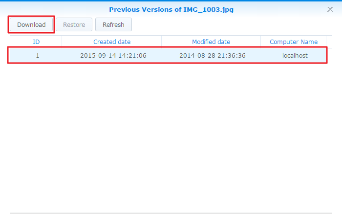

Přehled
Cloud Station pro zařízení Synology NAS je aplikace pro synchronizaci souborů, která umožňuje jednoduchou synchronizaci souborů na zařízení Synology NAS s ostatními zařízeními, jako jsou počítače nebo mobilní zařízení (s aplikací DS cloud). Instalací balíčku Cloud Station Server na zařízení Synology NAS a aplikace Cloud Station Drive do počítače zajistíte automatickou synchronizaci souborů uložených v počítači se zařízením Synology NAS.
Nastavení připojení mezi zařízením Synology NAS a počítačem
- Přejděte k možnosti Centrum balíčků, vyhledejte položku Cloud Station Server a potom klikněte na možnost Instalovat.
- Spusťte službu Cloud Station Server.
- Na kartě Přehled klikněte na tlačítko v části Cloud Station Drive a stáhněte aplikaci Cloud Station Drive pro svůj operační systém. (Službu Cloud Station si můžete stáhnout také z webu Centrum pro stahování společnosti Synology.)
- Spusťte na počítači instalační program a postupujte podle pokynů na obrazovce.
- Po instalaci v počítači aplikaci Cloud Station spusťte. Klikněte na možnost Začít.
- Zadejte adresu zařízení Synology NAS se spuštěnou službou Cloud Station (nebo QuickConnect ID), uživatelské jméno a heslo. IP adresy v rámci vaší sítě LAN je možné vyhledat kliknutím na ikonu vyhledávání vpravo. Klikněte na možnost Další.
- Kliknutím na ikony Upravit vyberte složky, které chcete na zařízení Synology NAS a na počítači synchronizovat. Kliknutím na možnost Rozšířené následně nakonfigurujte nastavení synchronizace
- Zrušte zaškrtnutí všech složek, které nechcete synchronizovat.
- Nastavte maximální velikost souboru nebo zadejte na seznam zakázaných položek názvy a typy souborů, které se nemají synchronizovat.
- Vyberte, jestli synchronizovat obousměrně nebo jen stahovat data ze zařízení Synology NAS.
- Nastavení dokončíte kliknutím na možnost Hotovo.
- Na hlavním panelu se zobrazí ikona Cloud Station.
- Kliknutím na ikonu hlavního panelu otevřete nabídku hlavního panelu. Zde je možné sledovat postup a stav souborů. Zde je možné sledovat postup a stav souborů. Kliknutím na možnost Hlavní aplikace spustíte službu Cloud Station.
- Po spuštění se zobrazí několik tipů k používání služby Cloud Station. Kliknutím na šipku doprava zobrazíte další tipy, případně kliknutím na možnost Online návody získáte více informací. Pokud tipy nepotřebujete, zaškrtněte políčko vedle možnosti Toto již nezobrazovat.
- Nyní můžete v aplikaci Cloud Station Drive spravovat své synchronizační úlohy.


Stažení předchozí verze synchronizovaného souboru
- Klikněte na ikonu Cloud Station Drive na hlavním panelu a klikněte na ikonu složky.
- Klikněte pravým tlačítkem myši na vybraný soubor a vyberte možnost Synology Cloud Station > Procházet předchozí verze.
- Vyhledejte verzi, kterou chcete stáhnout, a klikněte na ikonu stahování.


Stažení nebo obnovení předchozí verze synchronizovaného souboru ze služby Cloud Station Server
- Přejděte k možnosti Cloud Station Server > Historie verzí a najděte soubor či složku, které chcete obnovit.
- Vyberte soubor, který chcete načíst, a klikněte na možnost Akce > Procházet předchozí verze.
- Vyberte verzi souboru, který chcete stáhnout, a klikněte na možnost Stáhnout. Nebo pokud si jste jistí, že chcete vybranou verzi obnovit, klikněte na možnost Obnovit – aktuální verze se takto přepíše. 


Důležité poznámky
- Vždy uchovávejte historické verze pro případ, že se soubor omylem odstraní nebo přepíše.
- V části Globální nastavení je možné nakonfigurovat, zda se při opětovném připojení soubor odebraný z počítače znovu načte ze zařízení NAS nebo bude ze zařízení NAS odstraněn.
- Neprovádějte ruční kopírování souborů z počítače do zařízení NAS a opačně. Aby byla následná synchronizace dat efektivní, musí služba Cloud Station vyhledávat změny ve všech synchronizovaných souborech. Proto může dokončení počáteční synchronizace trvat poměrně dlouho. Potřebná doba závisí na počtu souborů a na výkonu zařízení NAS a počítače PC či Mac. Způsob fungování aplikace Cloud Station naleznete v našem bílém dokumentu v tomto odkazu.
Synchronizace dat s mobilními zařízeními
Aplikace DS cloud je dostupná zdarma v obchodech Apple App Store a Google Play Store. Pokud ji chcete stáhnout přímo, můžete také naskenovat níže uvedený QR kód.